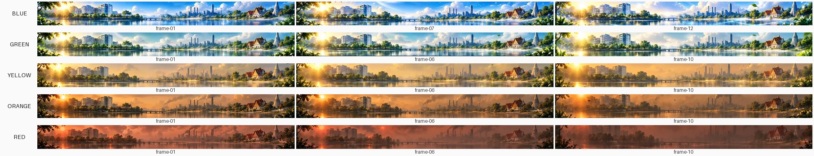

PM2.5 Frame-First v1 — BLUE gate review
BLUE gate
DEMO_ONLY_NOT_PRODUCTION
ทบทวนงาน frame-first ชุด BLUE (gate review) — 12 เฟรมจาก owner cells แท้ พร้อมเปรียบเทียบ 3 โหมด
Review page for the frame-first BLUE gate — native 12-frame loop with STEP / XFADE250 / PINGPONG comparisons.
Player · เครื่องเล่นแบบโต้ตอบ
Interactive player (STEP / XFADE250 / PINGPONG)
เปลี่ยนโหมดเปรียบเทียบและปรับ fps ได้ในหน้า player · Switch approach & fps inside the player.
Contact sheets · ภาพรวมทุกเฟรม
blue/contact-sheet.webp — 12 เฟรม owner cells (BLUE)

all-levels-contact-overview.webp — ภาพรวมทุกระดับ · all levels overview (BLUE approved; GREEN/ORANGE/RED/YELLOW pending gate)
Mode previews · ตัวอย่างแต่ละโหมด
Provenance · ที่มาของงาน
- BLUE: 12 genuine owner cells — ใช้เซลล์จริงจากเจ้าของงาน ทั้ง 12 เฟรม · แต่ละระดับอื่น (GREEN/ORANGE/RED/YELLOW) มี 10 cells รอผ่าน gate ก่อนนำมาใช้ (each other level: 10 cells, pending gate).
- Native counts not fabricated — จำนวนเฟรมมาจากข้อมูลจริง ไม่มีการกุข้อมูล · frame counts come from real data only.
- No overlay assets by policy — ไม่ฝัง asset overlay ตามนโยบาย.
- Base commit:
34cebfa (assets(pm25): add geometry-locked 5x16 loops and nature weather layers).
DEMO_ONLY_NOT_PRODUCTION — เพื่อทบทวนเท่านั้น ห้ามใช้งานจริง · review artifact, not production.